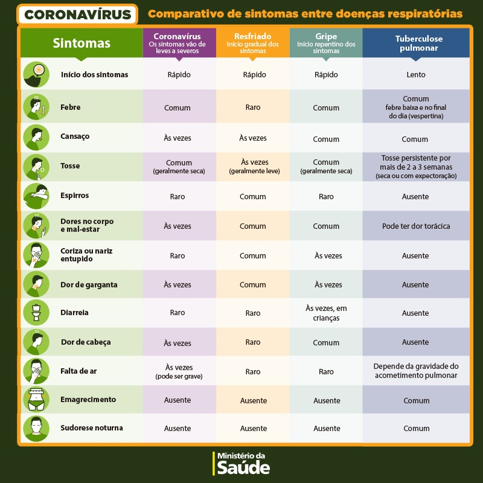

Módulo 3 | Módulo 3 | Manejo clínico: atenção especializada
COVID-19
Manejo da infecção causada pelo novo coronavírus
Aula 3
Investigação de imagem, laboratorial e diagnóstico diferencial da COVID-19
Esta é a Aula 3 do Módulo 3 do curso COVID-19 Fiocruz.
Nesta aula, vamos compartilhar o conhecimento científico atual na investigação de pacientes internados com suspeita ou diagnóstico confirmado de COVID-19.
Ao final, você será capaz de:
- Rever os exames laboratoriais para a definição etiológica;
- Conhecer os exames de admissão e monitoramento da evolução clínica de um paciente internado com a COVID-19;
- Reconhecer os principais quadros clínicos que fazem parte do diagnóstico diferencial da COVID-19.
Os materiais básicos de referência são:
- Diretrizes para Diagnóstico e Tratamento da COVID-19, da Secretaria de Ciência, Tecnologia, Inovação e Insumos Estratégicos em Saúde (SCTIE);
- Orientações para manejo de pacientes com COVID-19; e
- Guia de Cuidados Clínicos para as Infecções Respiratórias Agudas Graves, da Organização Mundial da Saúde ("Clinical Care for Severe Acute Respiratory Infection – Toolkit”)
Exames de admissão
Os exames apontados no quadro são de admissão e devem ser igualmente utilizados para avaliar a evolução clínica dos pacientes.
| EXAMES DE ADMISSÃO |
|---|
|
Ressalte-se a importância da realização da oximetria de pulso ou, quando possível, da gasometria arterial (mais precisa, porém mais dolorosa) para a avaliação e o acompanhamento dos níveis de oxigenação do paciente, bem como para orientar as decisões relativas ao tipo de oxigenoterapia e à ventilação mecânica. Essa questão é abordada, em detalhe, na Aula 5.
A periodicidade das coletas dos exames citados poderá variar de acordo com as condições clínicas dos pacientes.
Abordagem laboratorial inicial
As anormalidades laboratoriais mais comuns em pacientes com doença grave são:
- Leucopenia
- Linfopenia
- Leucocitose
- Transaminases hepáticas elevadas
Outras anormalidades incluem: neutrofilia, trombocitopenia, elevação de creatinina sérica e elevação de lactato desidrogenase sérica e marcadores inflamatórios.
| EXAMES DE ADMISSÃO |
|---|
|
A Dra. Denise Machado Medeiros, médica intensivista do Instituto Nacional de Infectologia Evandro Chagas (INI/Fiocruz), fala sobre os exames e os marcadores laboratoriais.
Exames laboratoriais de definição etiológica da COVID-19
A decisão de fazer os exames de testes de biologia molecular para SARS-CoV 2 e Influenza deve ser baseada em fatores clínicos e epidemiológicos. A coleta e testes de amostras adequadas de pacientes que atendem à definição de casos suspeitos de COVID-19 é importante para a confirmação diagnóstica, o tratamento clínico e controle do surto.
Conforme indicação da Rede CoVida - Testes diagnósticos da COVID-19:
- O RT-PCR deve ser solicitado preferencialmente entre 3 e 7 dias após contato com caso suspeito, podendo ser realizado no momento do início dos sintomas.
- Para o RT-PCR, deve ser colhido o material de oro-faringe ou escarro (não usar sangue nem urina);
- O teste para detecção de anticorpos (teste rápido ou ELISA) só deve ser solicitado após 7 dias do início dos sintomas.
- Estão disponíveis dois tipos de testes rápidos, de antígeno e de anticorpo, por meio da metodologia de imunocromatografia. O teste rápido de antígeno detecta proteína do vírus em amostras coletadas de naso/orofaringe, e deve ser realizado na fase de infecção ativa (fase aguda) e o teste rápido de anticorpos que detecta IgM e IgG (fase convalescente) em amostras de sangue total, soro ou plasma. Confira no vídeo o Guia de coleta e utilização do teste rápido Covid Ag produzido pelo Instituto de Biologia Molecular do Paraná.
Confira no vídeo o Guia de coleta e utilização do teste rápido Covid Ag produzido pelo Instituto de Biologia Molecular do Paraná: https://www.ibmp.org.br/pt-br/teste-rapido-covid-ag/
A coleta de amostra respiratória para esses exames deve ser feita por “swab” nasal (narinas direita e esquerda) e “swab” de orofaringe.
| SWAB NASAL | SWAB DE OROFARINGE |
|---|---|
Técnica para “swab” de nasofaringeMaterial necessário:
Técnica:
Em caso de “swab” nasofaríngeo em lactentes ou crianças jovens:
|
Técnica para “swab” da faringe posterior ou “swab” da gargantaMaterial necessário:
Técnica:
|
Fonte: Cuidados Clínicos de Infecções Respiratórias Agudas Graves Tool kit (Clinical care of severe acute respiratory infections – Tool kit - OMS)
É fundamental o uso de Equipamentos de Proteção Individual (EPI) adequados para as coletas (luvas, jalecos descartáveis, máscaras cirúrgicas ou respiradores com a N-95, óculos de proteção e protetores faciais). Para saber mais sobre procedimentos de proteção, veja a Aula 7 - Procedimentos de proteção e controle de infecção em ambiente hospitalar.
O teste molecular é realizado com maior frequência para detecção da presença do RNA do vírus SARS-Cov-2 é o RT-PCR. Vale ressaltar que esse teste, em geral, é positivo nos primeiros dias da infecção (até o 7o dia do início dos sintomas), sendo importante para identificação de casos na sua fase inicial e, eventualmente, para identificar os pacientes que permanecem capazes de transmitir o SARS-CoV-2 por tempo mais prolongado. O teste molecular pode dar negativo se realizado em uma fase posterior da doença, ou pode ser um “falso negativo”, não descartando totalmente a possibilidade de COVID-19.
Já o teste sorológico - sejam os testes rápidos imunocromatográficos ou os testes tradicionais de ELISA - visam identificar a presença de anticorpos contra o vírus, em geral detectáveis a partir do 8o dia e, principalmente, após o 14o dia . Também existe a possibilidade de resultado “falso negativo”, bem como não há garantia de que o resultado positivo assegure a imunidade contra a doença. Portanto, os testes sorológicos em geral não são úteis para o manejo clínico imediato, mas podem ser importantes em estudos epidemiológicos e em decisões relativas ao retorno de profissionais às atividades, entre outras possibilidades.
Os testes rápidos de antígeno da COVID-19 (Swab Nasofaríngeo) possuem a metodologia imunocromatográfica rápida para detecção qualitativa dos antígenos do SARS-COV-2, nas amostras coletadas com Swab nasofaríngeo de pacientes sintomáticos respiratórios com suspeita de infecção por SARS-COV-2 e são avaliados em conjunto com a apresentação clínica e os resultados de outros exames laboratoriais. Um antígeno geralmente é detectável nas amostras do trato respiratório superior durante a fase aguda da infecção. O teste rápido de detecção de antígeno tem maior probabilidade de ter um bom desempenho em pacientes com altas cargas virais, que geralmente aparecem na fase pré-sintomática e sintomática da doença (nos primeiros 05 a 07 dias da doença). Dessa forma, o teste rápido de detecção de antígeno oferece uma excelente oportunidade de diagnóstico precoce e a interrupção da transmissão por meio de isolamento direcionado dos casos infecciosos e seus contatos próximos. Pacientes que apresentam mais de 5 a 7 dias após o início dos sintomas são mais propensos a ter cargas virais mais baixas e a probabilidade de resultados falso-negativos é maior com os testes rápido de antígeno, por essa razão não são indicados para esses casos.
Vale destacar que o teste para diagnóstico diferencial ou identificação de infecção concomitante por influenza deve ser realizado precocemente, visto que existe terapia medicamentosa específica para essa doença (Oseltamivir) que deve ser iniciada, caso o resultado seja positivo ou caso haja suspeita de influenza e sinais de gravidade clínica. Para saber mais sobre Suporte Farmacológico, consulte a Aula 4.
Ressalte-se ainda que outros exames podem ser necessários para diagnóstico diferencial, caso haja suspeita de outras doenças de etiologia viral ou bacteriana.
Para mais informações sobre testagem para SARS-Cov-2, consulte:
- Ministério da Saúde - Boletim COE COVID-19, de 19/04/2020
- Rede Covida. Testes diagnósticos da COVID-19. Bases das indicações e seus usos. Abril de 2020.
- Brasil. Ministério da Saúde. Secretaria de Vigilância em Saúde. Departamento de Análise em Saúde e Doenças não Transmissíveis. Diagnosticar para cuidar [recurso eletrônico] / Ministério da Saúde, Secretaria de Vigilância em Saúde. – Brasília : Ministério da Saúde, 2021.
Abordagem por exames de imagem
Radiografia de tórax
No Raio X de tórax, a doença evolui com infiltrados pulmonares unilaterais em 25% dos pacientes e com infiltrados pulmonares bilaterais em 75% dos pacientes.
Raio-X de tórax AP de paciente com COVID-19 em ventilação mecânica. Presença de opacificações bilaterais difusas em paciente com maior comprometimento pulmonar.
Fonte: Curso COVID-19: Manejo do paciente com distúrbios respiratórios - Unidade 1
Tomografia computadorizada de tórax
A tomografia computadorizada de tórax apresenta achados anormais, relatados em até 97% dos pacientes. Até o momento, os casos publicados apresentaram predomínio de alterações alveolares, como opacidades em vidro fosco, consolidações focais e opacidades mistas (incluindo opacidades com halo invertido), geralmente com acometimento bilateral e multifocal, distribuição periférica e predomínio nos campos pulmonares médios, inferiores e posteriores. Pequenas opacidades nodulares em vidro fosco são o achado mais comum em crianças.
Porém, vale assinalar que existem padrões variados de acometimento pulmonar, que podem gerar outros tipos de alterações na TC de tórax.
A velocidade e letalidade do coronavírus resultaram em mudanças rápidas e contínuas nas práticas para o tratamento da COVID-19. O aprendizado e as vacinas impactaram positivamente o combate a COVID-19. Diante disso, a iniciativa internacional Choosing Wisely reuniu abordagens práticas, baseadas em evidências científicas, orientadas para pacientes e profissionais de saúde que são de fácil execução. O uso racional de recursos está entre essas recomendações, Assim, não é indicado realizar exame de tomografia computadorizada de tórax rotineiramente como forma de orientar o tratamento, visto que não há dados que fundamentam esse uso.
Imagens de TCAR de tórax (cortes axiais) demonstrando opacidades em vidro fosco multifocais e bilaterais, com predomínio periférico e posterior, que são achados pulmonares típicos da infecção por COVID-19 (confirmada laboratorialmente por RT-PCR).
Fonte: Araújo-Filho et al.(2020)
A Dra. Claudia Costa, pneumologista, professora coordenadora da disciplina de pneumologia da Uerj e responsável pela instalação da área de pré-atendimento hospitalar na mesma Universidade, fala sobre o padrão tomográfico clássico da COVID-19.
A Sociedade Brasileira de Pneumologia e Tisiologia promoveu uma série de debates sobre atendimento e procedimentos médicos no contexto da COVID-19. Você pode assistir ao debate completo aqui.
US como alternativa de imagem para diagnóstico de COVID-19
A Dra. Claudia Costa, pneumologista, professora coordenadora da disciplina de pneumologia da Uerj e responsável pela instalação da área de pré-atendimento hospitalar na mesma Universidade, explica como o ultrassom tem sido usado para o diagnóstico da doença.
Reconhecer os principais quadros clínicos que fazem parte do diagnóstico diferencial da COVID-19
É muito importante que alguns diagnósticos diferenciais sejam levados em conta durante o manejo inicial dos pacientes com suspeita da COVID-19.
Agentes virais
| Vírus mais comuns |
|---|
| Vírus respiratório sincicial, parainfluenza, rinovírus, adenovírus, enterovírus (EVD68), metapneumovírus humano, bocavírus e influenza |
| Vírus menos comuns, exceto em situações de risco ou aumento de risco por conta de uma epidemia |
| Varicela-zoster, sarampo, coronavírus humanos, incluindo COVID-19, MERS e SARS e hantavírus |
| Em casos de imunossupressão (ex. HIV) |
| Citomegalovírus e herpes simples, além dos indicados acima |
Agentes bacterianos
| Bactérias mais comuns |
|---|
| Streptococcus pneumoniae, Hemophilus influenzae, Moraxella catarrhalis, Legionella pneumophila, non-pneumophila Legionella, Chlamydia pneumonia, Mycoplasma pneumoniae, Klebsiella pneumonia, Staphylococcus aureus. |
| Bactérias menos comuns, exceto em situações de risco ou em países com alta prevalência |
| Mycobacterium tuberculosis, Burkholderia pseudomallei, Rickettsial infections, Coxiella burnetti (Q fever), Leptospira spp, Chlamydia psittaci, Bortedella pertussis, Salmonella sp. |
| Agentes resistentes |
|
Fatores de risco para agentes multirresistentes Terapia antimicrobiana intravenosa a menos que 90 dias Os agentes resistentes incluem
|
| Outras infecções endêmicas |
|---|
| Malária, dengue, chikungunya, tuberculosis e HIV |
Fonte: World Health Organization
Entretanto, em períodos epidêmicos como o atual, a infecção pelo SARS-CoV2 precisa sempre ser aventada em casos suspeitos, devendo ser confirmada por testes laboratoriais específicos.
O Brasil, de uma forma geral, possui várias doenças endêmicas que têm numerosos sinais e sintomas, que também estão relacionados à doença causada pela SARS-Cov2. O diagnóstico pode diferenciar de acordo, por exemplo, com as faixas etárias e as áreas geográficas. Assim, em crianças as etiologias virais comuns em meses mais frios são o vírus sincicial respiratório (em menores de 2 anos) e os vírus influenza (gripe), parainfluenza, rinovírus e adenovírus (resfriados comuns).
O quadro a seguir compara algumas doenças respiratórias frequentes, destacando seus sintomas e sinais mais comuns.
Fonte: Universidade Aberta do SUS (UNA-SUS).
Em um momento em que ainda há casos de sarampo sendo detectados no Brasil, é importante que essa doença viral entre no diagnóstico diferencial da COVID-19, mesmo entre adolescentes e adultos jovens.
Dengue, Zika e Chikungunya são patologias virais que também devem ser descartadas uma vez que podem cursar com sinais e sintomas iniciais semelhantes àqueles descritos para a COVID-19. Nesses casos, é muito importante o conhecimento sobre a distribuição de casos nas áreas geográficas, dados fornecidos pelos sistemas de vigilância em saúde dos municípios.
Doenças bacterianas respiratórias podem apresentar sintomatologias iniciais semelhantes, e o principal agente causador comunitário é o Streptococcus pneumoniae, sendo o Hemophilus influenzae e a Moraxella catarrhalis agentes secundários. É importante lembrar que as infecções pulmonares bacterianas podem aparecer também como complicações pulmonares secundárias à COVID-19.
Questão geográfica
Em áreas da região Amazônica, a malária deve ser sempre aventada como diagnóstico diferencial, principalmente em épocas de maior disseminação da doença - entre junho e setembro -, períodos de seca. Outro fator importante com relação à região é a diferença no que se refere à variação sazonal do vírus influenza. Segundo o Ministério da Saúde, sua circulação na região segue o período sazonal da doença, potencializado pelas chuvas e enchentes e consequente aglomeração de pessoas. Portanto, é nesse período que se observa uma maior circulação do vírus.
Chegamos ao fim da aula
Você terminou a Aula 3 do Módulo 3 do curso COVID-19 - Manejo da infecção causada pelo novo coronavírus.
Nesta aula, você revisou os exames laboratoriais para a definição etiológica, conheceu os exames de admissão e monitoramento da evolução clínica de um paciente internado com a COVID-19 e aprendeu a reconhecer os principais quadros clínicos que fazem parte do diagnóstico diferencial da doença.
Na próxima aula, vamos falar sobre suporte farmacológico a pacientes com covd-19.
Siga em frente!